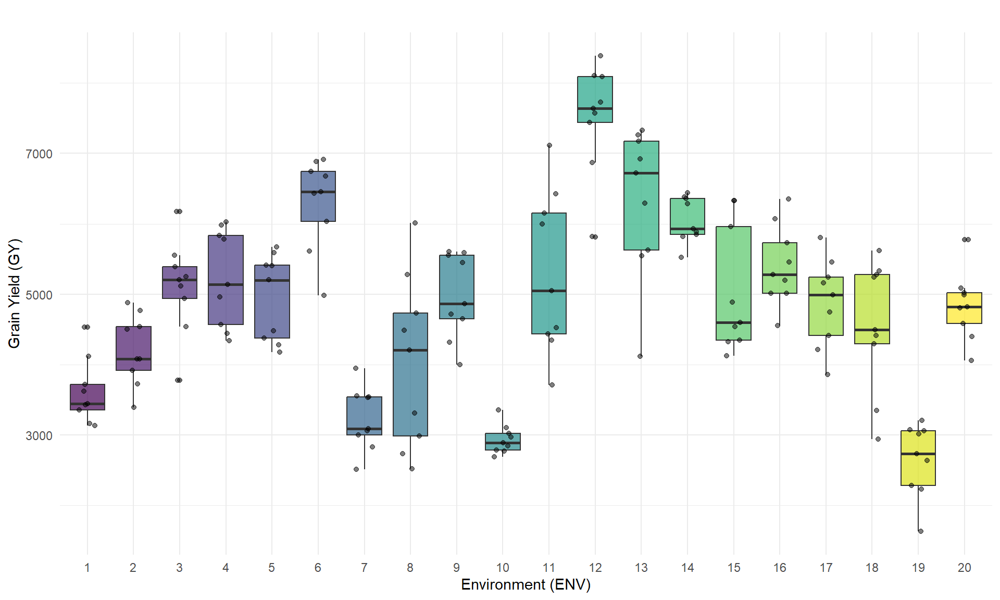
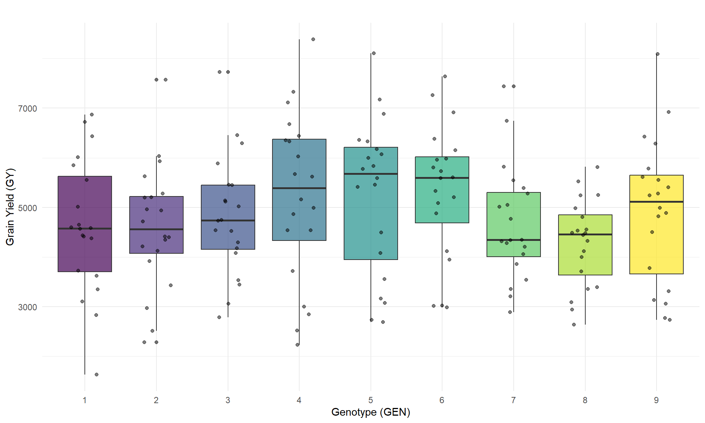
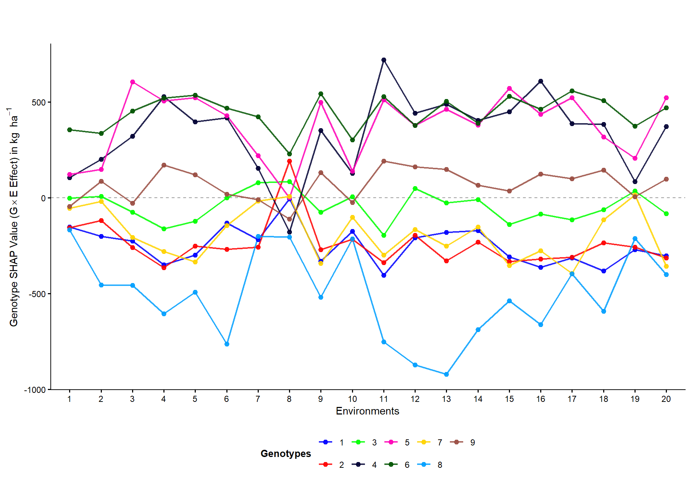
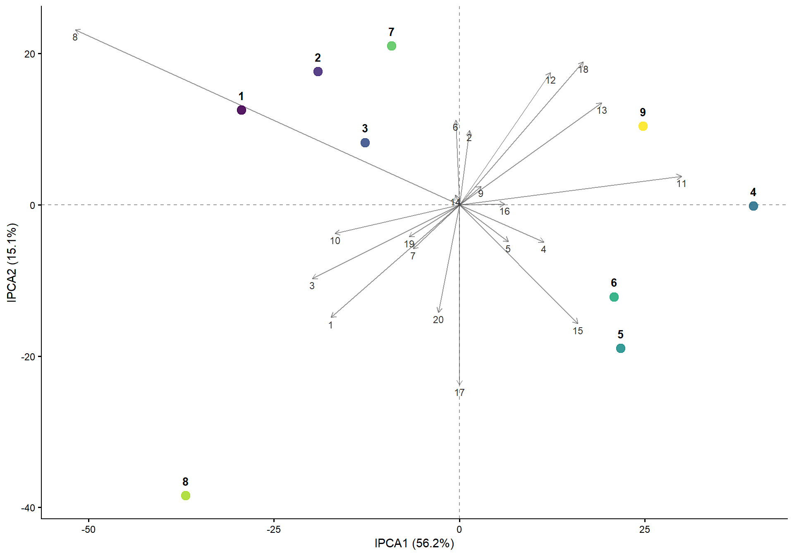
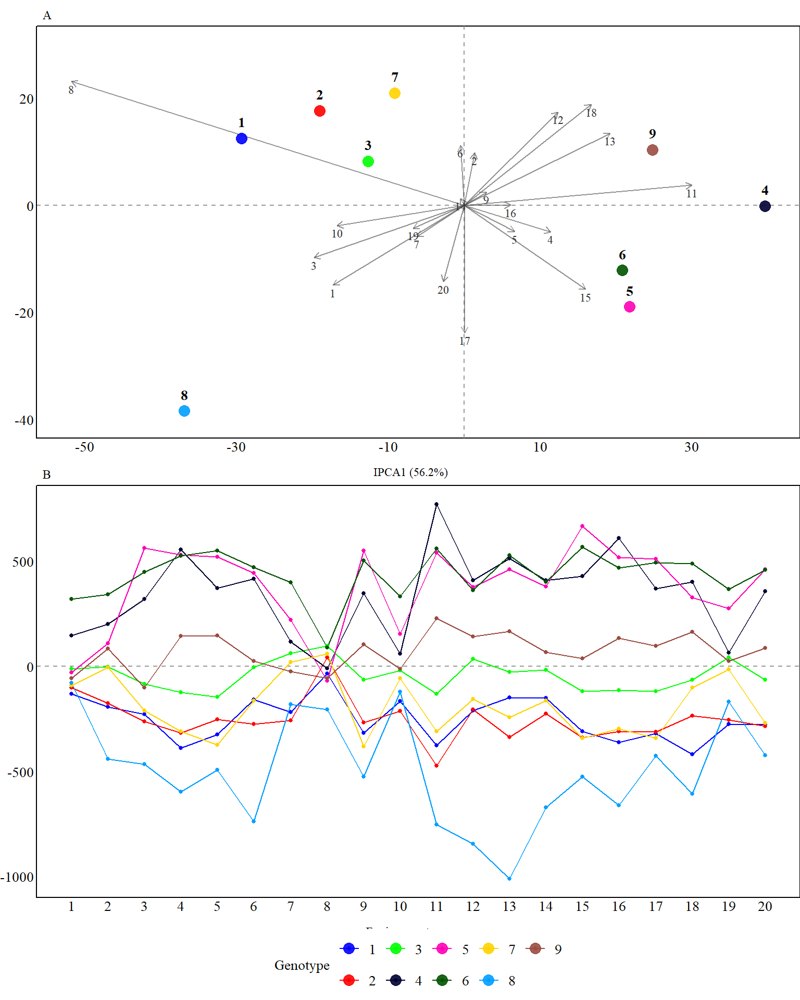
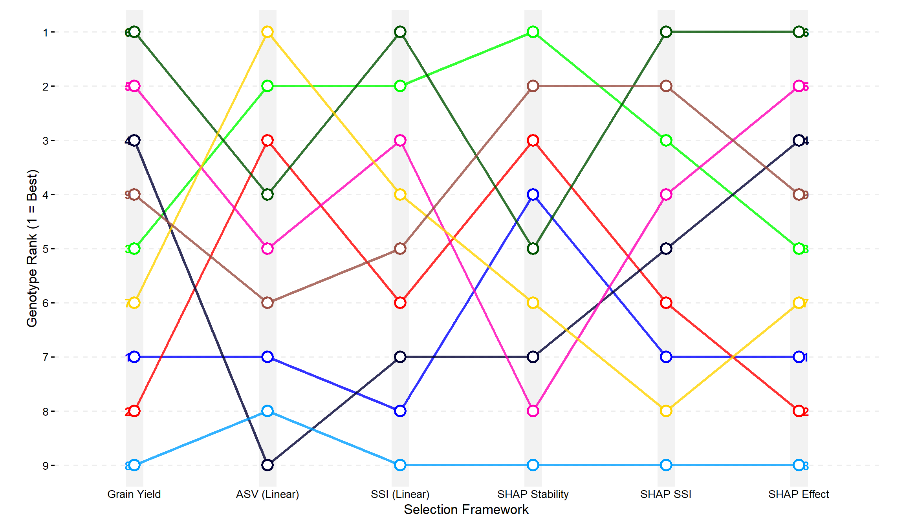
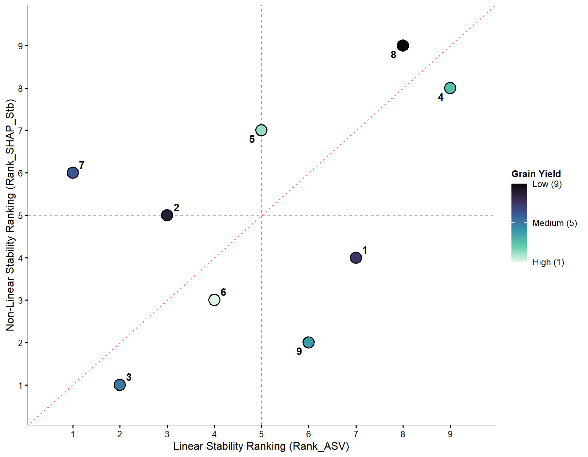
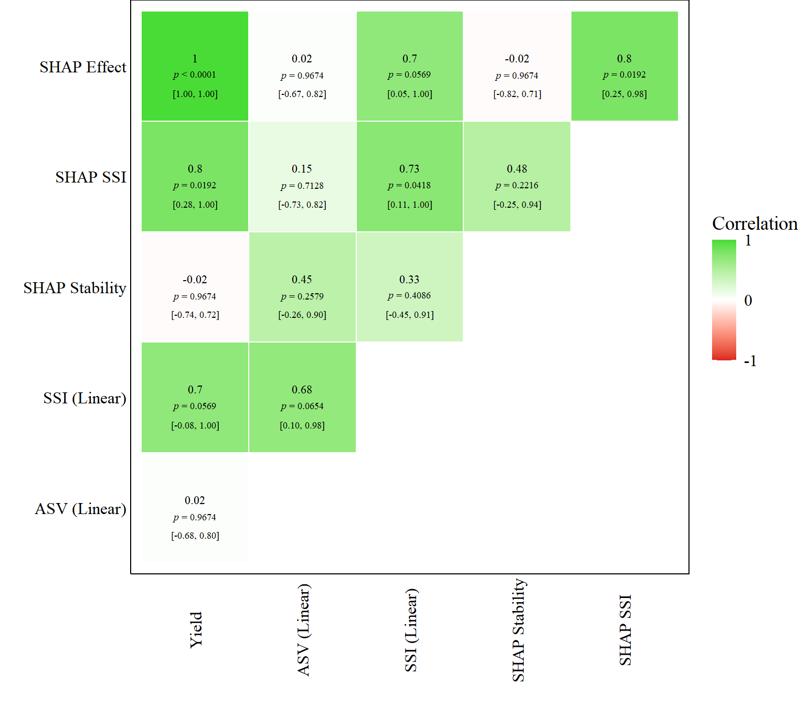

Last updated: 2026-07-14
Checks: 7 0
Knit directory:
nonlinear-ge-interaction-shap/
This reproducible R Markdown analysis was created with workflowr (version 1.7.2). The Checks tab describes the reproducibility checks that were applied when the results were created. The Past versions tab lists the development history.
Great! Since the R Markdown file has been committed to the Git repository, you know the exact version of the code that produced these results.
Great job! The global environment was empty. Objects defined in the global environment can affect the analysis in your R Markdown file in unknown ways. For reproduciblity it’s best to always run the code in an empty environment.
The command set.seed(20260713) was run prior to running
the code in the R Markdown file. Setting a seed ensures that any results
that rely on randomness, e.g. subsampling or permutations, are
reproducible.
Great job! Recording the operating system, R version, and package versions is critical for reproducibility.
Nice! There were no cached chunks for this analysis, so you can be confident that you successfully produced the results during this run.
Great job! Using relative paths to the files within your workflowr project makes it easier to run your code on other machines.
Great! You are using Git for version control. Tracking code development and connecting the code version to the results is critical for reproducibility.
The results in this page were generated with repository version 00803c4. See the Past versions tab to see a history of the changes made to the R Markdown and HTML files.
Note that you need to be careful to ensure that all relevant files for
the analysis have been committed to Git prior to generating the results
(you can use wflow_publish or
wflow_git_commit). workflowr only checks the R Markdown
file, but you know if there are other scripts or data files that it
depends on. Below is the status of the Git repository when the results
were generated:
Ignored files:
Ignored: .Rproj.user/
Ignored: code/Codigo_SHAP_GE_10_07_23.txt
Ignored: data/Manuscript_MN_NE_ACCN.docx
Untracked files:
Untracked: output/random_forest_loeo_predictions.rds
Untracked: output/shap_results.rds
Note that any generated files, e.g. HTML, png, CSS, etc., are not included in this status report because it is ok for generated content to have uncommitted changes.
These are the previous versions of the repository in which changes were
made to the R Markdown (analysis/analysis.Rmd) and HTML
(docs/analysis.html) files. If you’ve configured a remote
Git repository (see ?wflow_git_remote), click on the
hyperlinks in the table below to view the files as they were in that
past version.
| File | Version | Author | Date | Message |
|---|---|---|---|---|
| Rmd | 00803c4 | WevertonGomesCosta | 2026-07-14 | Load validated results for computationally intensive analyses |
| html | 83325f9 | WevertonGomesCosta | 2026-07-14 | Build site. |
| Rmd | e9401c2 | WevertonGomesCosta | 2026-07-14 | Use full-width figures and tables |
| html | 86b4bbc | WevertonGomesCosta | 2026-07-14 | Build site. |
| Rmd | 20f6446 | WevertonGomesCosta | 2026-07-14 | Update project pages, authorship, contacts, and citation |
| html | 02fb7fb | WevertonGomesCosta | 2026-07-13 | Build site. |
| Rmd | d7f6a52 | WevertonGomesCosta | 2026-07-13 | Complete genotype ranking and stability analyses |
| html | 7a46ba1 | WevertonGomesCosta | 2026-07-13 | Build site. |
| Rmd | f059a2a | WevertonGomesCosta | 2026-07-13 | Add stability indices and genotype rankings |
| html | 03dc0c0 | WevertonGomesCosta | 2026-07-13 | Build site. |
| Rmd | d4ef886 | WevertonGomesCosta | 2026-07-13 | Add joint AMMI and SHAP representation |
| html | f321462 | WevertonGomesCosta | 2026-07-13 | Build site. |
| Rmd | df4cac4 | WevertonGomesCosta | 2026-07-13 | Add AMMI decomposition and interaction biplot |
| html | 95e3343 | WevertonGomesCosta | 2026-07-13 | Build site. |
| Rmd | df27105 | WevertonGomesCosta | 2026-07-13 | Fix SHAP profile plot margin namespace |
| html | b59cfdd | WevertonGomesCosta | 2026-07-13 | Build site. |
| Rmd | 236dcfd | WevertonGomesCosta | 2026-07-13 | Add environmental index and Random Forest validation |
| html | 029bb27 | WevertonGomesCosta | 2026-07-13 | Build site. |
| Rmd | 3bca313 | WevertonGomesCosta | 2026-07-13 | Add data preparation and phenotypic performance analysis |
| html | 9f70394 | WevertonGomesCosta | 2026-07-13 | Build site. |
| Rmd | 6f375a8 | WevertonGomesCosta | 2026-07-13 | Add initial reproducible analysis page |
This page presents the complete reproducible analytical workflow associated with the study “Non-Linear Modeling of Genotype × Environment Interaction via Tree-Based Learning Algorithms and Shapley Decomposition.”
The workflow combines phenotypic evaluation, Random Forest modeling, Shapley Additive Explanations, AMMI decomposition, stability indices, genotype ranking, and rank correlation.
All analytical code is presented directly in this R Markdown document and follows the order required to reproduce the analysis.
The following packages are used for data manipulation, graphical visualization, Random Forest modeling, SHAP decomposition, composite figure construction, genotype-rank visualization, and rank-correlation analysis.
library(ggplot2)
library(dplyr)
library(tidyr)
library(randomForest)
library(DALEX)
library(patchwork)
library(ggrepel)
library(corrplot)
library(viridisLite)The maize multi-environment trial data set is stored as a
tab-delimited text file in the data directory.
maize <- read.table(
"data/maize.txt",
h = TRUE
)
head(maize) ENV GEN REP GY
1 1 1 1 3699.7
2 1 1 2 2947.9
3 1 1 3 3745.3
4 1 1 4 4093.3
5 1 2 1 3801.2
6 1 2 2 1631.4The original replicate-level observations are summarized by genotype and environment. The resulting data frame contains the mean grain yield for each genotype-by-environment combination.
df_ml <- maize %>%
group_by(GEN, ENV) %>%
summarise(
GY = mean(GY, na.rm = TRUE),
.groups = "drop"
)
df_ml$ENV <- as.factor(df_ml$ENV)
df_ml$GEN <- as.factor(df_ml$GEN)The distribution of mean grain yield is represented for each environment. Each point corresponds to the mean performance of one genotype within an environment.
ggplot(df_ml, aes(x = ENV, y = GY, fill = ENV)) +
geom_boxplot(
alpha = 0.7,
show.legend = FALSE
) +
geom_jitter(
width = 0.2,
alpha = 0.5,
color = "black"
) +
labs(
title = "",
x = "Environment (ENV)",
y = "Grain Yield (GY)"
) +
theme_minimal() +
scale_fill_viridis_d() +
theme(
legend.position = "none"
)
| Version | Author | Date |
|---|---|---|
| 029bb27 | WevertonGomesCosta | 2026-07-13 |
The distribution of mean grain yield is represented for each genotype. Each point corresponds to the mean performance of one genotype within an environment.
ggplot(df_ml, aes(x = GEN, y = GY, fill = GEN)) +
geom_boxplot(
alpha = 0.7
) +
geom_jitter(
width = 0.2,
alpha = 0.5,
color = "black"
) +
labs(
title = "",
x = "Genotype (GEN)",
y = "Grain Yield (GY)"
) +
theme_minimal() +
scale_fill_viridis_d() +
theme(
legend.position = "none"
)
| Version | Author | Date |
|---|---|---|
| 029bb27 | WevertonGomesCosta | 2026-07-13 |
The environmental index is calculated as the mean grain yield of all genotypes evaluated within each environment. This continuous variable represents the productive potential of each environment.
env_indices <- df_ml %>%
group_by(ENV) %>%
summarise(
ENV_INDEX = mean(GY, na.rm = TRUE),
.groups = "drop"
)
df_ml <- df_ml %>%
left_join(env_indices, by = "ENV")
head(env_indices)# A tibble: 6 × 2
ENV ENV_INDEX
<fct> <dbl>
1 1 3613.
2 2 4209.
3 3 5105.
4 4 5230.
5 5 4955.
6 6 6305.The Random Forest model is evaluated through leave-one-environment-out cross-validation. At each iteration, one environment is reserved for prediction, while the remaining environments are used for model fitting.
set.seed(42)
ambientes <- unique(df_ml$ENV)
predicoes_cv <- data.frame()
cat("Starting leave-one-environment-out cross-validation...\n")Starting leave-one-environment-out cross-validation...for (env_teste in ambientes) {
dados_treino <- df_ml %>%
filter(ENV != env_teste)
dados_teste <- df_ml %>%
filter(ENV == env_teste)
rf_fold <- randomForest(
GY ~ GEN + ENV_INDEX,
data = dados_treino,
ntree = 500
)
dados_teste$Pred_GY <- predict(
rf_fold,
newdata = dados_teste
)
predicoes_cv <- bind_rows(
predicoes_cv,
dados_teste
)
}Predictive performance is summarized using the cross-validated coefficient of determination, the Pearson correlation between observed and predicted grain yield, and the root mean squared error.
ss_res <- sum(
(predicoes_cv$GY - predicoes_cv$Pred_GY)^2
)
ss_tot <- sum(
(predicoes_cv$GY - mean(predicoes_cv$GY))^2
)
r2_cv <- 1 - (ss_res / ss_tot)
rmse_cv <- sqrt(
mean(
(predicoes_cv$GY - predicoes_cv$Pred_GY)^2
)
)
accuracy_r <- cor(
predicoes_cv$GY,
predicoes_cv$Pred_GY
)
cat(
"\n=== LEAVE-ONE-ENVIRONMENT-OUT VALIDATION METRICS ===\n"
)
=== LEAVE-ONE-ENVIRONMENT-OUT VALIDATION METRICS ===cat(
"Predictive capacity (cross-validated R²): ",
round(r2_cv * 100, 2),
"%\n"
)Predictive capacity (cross-validated R²): 71.94 %cat(
"Predictive accuracy (r): ",
round(accuracy_r, 2),
"\n"
)Predictive accuracy (r): 0.85 cat(
"Cross-validation RMSE: ",
round(rmse_cv, 2),
" kg ha-1\n"
)Cross-validation RMSE: 717.02 kg ha-1The final Random Forest model is fitted using the complete analytical data set. Grain yield is modeled as a function of genotype and the continuous environmental index.
set.seed(42)
rf_model <- randomForest(
GY ~ GEN + ENV_INDEX,
data = df_ml,
ntree = 500
)The Random Forest model is connected to the DALEX framework using the genotype and environmental-index predictors. The response variable supplied to the explainer is the observed mean grain yield.
explainer_rf <- explain(
model = rf_model,
data = df_ml[, c("GEN", "ENV_INDEX")],
y = df_ml$GY,
label = "Random Forest GxE (Continuous)"
)SHAP contributions are calculated for every genotype-by-environment observation. For each observation, the mean contribution associated with genotype and environmental index is extracted from the SHAP decomposition.
shap_list <- list()
cat("Starting SHAP contribution calculation...\n")
for (i in 1:nrow(df_ml)) {
obs <- df_ml[i, c("GEN", "ENV_INDEX")]
shap_obs <- predict_parts(
explainer = explainer_rf,
new_observation = obs,
type = "shap",
B = 25
)
val_gen <- shap_obs %>%
filter(variable_name == "GEN") %>%
summarise(mean(contribution)) %>%
pull()
val_env <- shap_obs %>%
filter(variable_name == "ENV_INDEX") %>%
summarise(mean(contribution)) %>%
pull()
shap_list[[i]] <- data.frame(
SHAP_GEN = val_gen,
SHAP_ENV = val_env
)
}
df_shap_final <- bind_rows(shap_list)
df_results <- cbind(
df_ml,
df_shap_final
)
head(df_results)head(df_results) GEN ENV GY ENV_INDEX SHAP_GEN SHAP_ENV
1 1 1 3621.550 3612.531 -151.5668 -1058.48148
2 1 2 3728.325 4209.444 -201.7336 -539.92178
3 1 3 5554.025 5104.919 -225.5393 267.99268
4 1 4 4565.575 5229.997 -349.7975 237.71528
5 1 5 4379.800 4955.231 -299.3879 21.53598
6 1 6 6436.725 6305.306 -131.2397 1370.67649Genotype-specific SHAP contributions are represented across environments. Positive and negative values indicate the direction of the genotype contribution to the Random Forest prediction relative to the model reference value.
df_results$GEN <- as.factor(df_results$GEN)
df_results$ENV <- as.factor(df_results$ENV)
p_shap <- ggplot(
df_results,
aes(
x = ENV,
y = SHAP_GEN,
group = GEN,
color = GEN
)
) +
geom_hline(
yintercept = 0,
linetype = "dashed",
color = "gray60",
linewidth = 0.4
) +
geom_line(
linewidth = 0.8,
alpha = 0.85
) +
geom_point(
size = 2,
alpha = 0.9
) +
scale_color_viridis_d(
option = "viridis"
) +
theme_classic(
base_size = 12
) +
labs(
title = "",
subtitle = "",
x = "Environments",
y = expression(
paste(
"Genotype SHAP Value (G",
times,
"E Effect) in kg ",
ha^-1
)
),
color = "Genotypes"
) +
theme(
plot.title = element_text(
face = "bold",
size = 13,
hjust = 0
),
plot.subtitle = element_text(
size = 10,
color = "gray30",
margin = ggplot2::margin(b = 12)
),
axis.title = element_text(
face = "plain",
size = 11
),
axis.text = element_text(
color = "black",
size = 9
),
legend.position = "bottom",
legend.title = element_text(
face = "bold",
size = 10
),
legend.text = element_text(
size = 9
),
axis.line = element_line(
color = "black",
linewidth = 0.5
)
)
print(p_shap)
| Version | Author | Date |
|---|---|---|
| 95e3343 | WevertonGomesCosta | 2026-07-13 |
The genotype-by-environment interaction effects are obtained after removing the genotype and environment main effects from the mean grain-yield observations.
grand_mean <- mean(
df_results$GY,
na.rm = TRUE
)
env_effects <- df_results %>%
group_by(ENV) %>%
summarise(
m_env = mean(GY, na.rm = TRUE),
.groups = "drop"
)
gen_effects <- df_results %>%
group_by(GEN) %>%
summarise(
m_gen = mean(GY, na.rm = TRUE),
.groups = "drop"
)
df_int <- df_results %>%
left_join(
env_effects,
by = "ENV"
) %>%
left_join(
gen_effects,
by = "GEN"
) %>%
mutate(
GE_effect = GY - m_env - m_gen + grand_mean
)
mat_int <- df_int %>%
select(
GEN,
ENV,
GE_effect
) %>%
pivot_wider(
names_from = ENV,
values_from = GE_effect
) %>%
tibble::column_to_rownames("GEN") %>%
as.matrix()Singular value decomposition is applied to the genotype-by-environment interaction matrix. The squared singular values are used to calculate the percentage of interaction variation represented by each component.
svd_ammi <- svd(mat_int)
lambda <- svd_ammi$d
var_explained <- (
lambda^2 / sum(lambda^2)
) * 100
ipca1_pct <- round(
var_explained[1],
2
)
ipca2_pct <- round(
var_explained[2],
2
)
data.frame(
Component = paste0(
"IPCA",
seq_along(var_explained)
),
Explained_variation = round(
var_explained,
2
)
) Component Explained_variation
1 IPCA1 56.20
2 IPCA2 15.10
3 IPCA3 10.44
4 IPCA4 8.62
5 IPCA5 4.95
6 IPCA6 2.76
7 IPCA7 1.01
8 IPCA8 0.92
9 IPCA9 0.00The scores of the first two interaction principal components are obtained separately for genotypes and environments.
scores_gen <- as.data.frame(
svd_ammi$u[, 1:2] %*%
diag(
sqrt(lambda[1:2])
)
)
colnames(scores_gen) <- c(
"IPCA1",
"IPCA2"
)
scores_gen$GEN <- as.factor(
rownames(mat_int)
)
scores_env <- as.data.frame(
svd_ammi$v[, 1:2] %*%
diag(
sqrt(lambda[1:2])
)
)
colnames(scores_env) <- c(
"IPCA1",
"IPCA2"
)
scores_env$ENV <- as.factor(
colnames(mat_int)
)The AMMI biplot represents genotype scores and environmental vectors for the first two interaction principal components. The percentages shown on the axes correspond to the interaction variation represented by each component.
p_ammi <- ggplot() +
geom_vline(
xintercept = 0,
linetype = "dashed",
color = "gray60",
linewidth = 0.4
) +
geom_hline(
yintercept = 0,
linetype = "dashed",
color = "gray60",
linewidth = 0.4
) +
geom_segment(
data = scores_env,
aes(
x = 0,
y = 0,
xend = IPCA1,
yend = IPCA2
),
arrow = arrow(
length = grid::unit(
0.18,
"cm"
)
),
color = "gray30",
alpha = 0.6,
linewidth = 0.5
) +
geom_text(
data = scores_env,
aes(
x = IPCA1,
y = IPCA2,
label = ENV
),
vjust = 1.4,
color = "gray20",
size = 3
) +
geom_point(
data = scores_gen,
aes(
x = IPCA1,
y = IPCA2,
color = GEN
),
size = 3.5,
alpha = 0.9
) +
geom_text(
data = scores_gen,
aes(
x = IPCA1,
y = IPCA2,
label = GEN
),
vjust = -1.2,
fontface = "bold",
size = 3.5,
show.legend = FALSE
) +
scale_color_viridis_d(
option = "viridis"
) +
theme_classic(
base_size = 12
) +
labs(
x = paste0(
"IPCA1 (",
ipca1_pct,
"%)"
),
y = paste0(
"IPCA2 (",
ipca2_pct,
"%)"
),
color = "Genotypes"
) +
theme(
axis.title = element_text(
face = "plain",
size = 11
),
axis.text = element_text(
color = "black",
size = 9
),
axis.line = element_line(
color = "black",
linewidth = 0.5
),
legend.position = "none"
)
print(p_ammi)
| Version | Author | Date |
|---|---|---|
| f321462 | WevertonGomesCosta | 2026-07-13 |
The AMMI biplot and genotype-specific SHAP profiles are combined vertically. Panel A represents the first two interaction principal components, while Panel B represents the genotype SHAP contribution across environments.
figura_final <- (
p_ammi /
p_shap
) +
plot_layout(
heights = c(
1,
1.1
)
) +
plot_annotation(
tag_levels = "A"
)
print(figura_final)
| Version | Author | Date |
|---|---|---|
| 03dc0c0 | WevertonGomesCosta | 2026-07-13 |
The AMMI Stability Value combines the scores of the first two interaction principal components. Lower ASV values indicate greater stability according to the AMMI representation.
peso_asv <- var_explained[1] / var_explained[2]
asv_gen <- scores_gen %>%
mutate(
ASV = sqrt(
((peso_asv * IPCA1)^2) +
(IPCA2^2)
)
) %>%
select(
GEN,
ASV
)
asv_gen GEN ASV
1 1 109.89080
2 2 73.04897
3 3 47.86631
4 4 147.49554
5 5 83.25008
6 6 78.58688
7 7 39.96620
8 8 142.48535
9 9 92.81560The mean genotype SHAP contribution represents the average contribution of each genotype across environments. The standard deviation of the genotype SHAP contributions represents the variation of this contribution across environments.
tab_shap <- df_results %>%
group_by(GEN) %>%
summarise(
Media_GY = mean(GY),
SHAP_Medio = mean(SHAP_GEN),
SHAP_SD = sd(SHAP_GEN),
.groups = "drop"
)
tab_shap# A tibble: 9 × 4
GEN Media_GY SHAP_Medio SHAP_SD
<fct> <dbl> <dbl> <dbl>
1 1 4617. -250. 99.7
2 2 4603. -242. 119.
3 3 4823. -44.4 79.1
4 4 5218. 338. 206.
5 5 5247. 375. 176.
6 6 5330. 444. 91.8
7 7 4672. -192. 135.
8 8 4283. -505. 230.
9 9 4930. 69.3 84.3The Simultaneous Selection Index combines the grain-yield ranking and the AMMI Stability Value ranking. The consolidated data set also includes rankings based on mean SHAP contribution and SHAP variation.
tabela_comparativa <- left_join(
tab_shap,
asv_gen,
by = "GEN"
)
dados_resultado <- tabela_comparativa %>%
mutate(
Rank_Prod = rank(
-Media_GY,
ties.method = "first"
),
Rank_ASV = rank(
ASV,
ties.method = "first"
),
Rank_SSI = rank(
Rank_Prod + Rank_ASV,
ties.method = "first"
),
Rank_SHAP_Eff = rank(
-SHAP_Medio,
ties.method = "first"
),
Rank_SHAP_Stb = rank(
SHAP_SD,
ties.method = "first"
)
) %>%
arrange(Rank_Prod)Genotypes are compared according to grain yield, AMMI stability, simultaneous selection, mean SHAP contribution, and SHAP stability. In every ranking, position 1 represents the preferred genotype according to the corresponding criterion.
print(dados_resultado)# A tibble: 9 × 10
GEN Media_GY SHAP_Medio SHAP_SD ASV Rank_Prod Rank_ASV Rank_SSI
<fct> <dbl> <dbl> <dbl> <dbl> <int> <int> <int>
1 6 5330. 444. 91.8 78.6 1 4 1
2 5 5247. 375. 176. 83.3 2 5 3
3 4 5218. 338. 206. 147. 3 9 7
4 9 4930. 69.3 84.3 92.8 4 6 5
5 3 4823. -44.4 79.1 47.9 5 2 2
6 7 4672. -192. 135. 40.0 6 1 4
7 1 4617. -250. 99.7 110. 7 7 8
8 2 4603. -242. 119. 73.0 8 3 6
9 8 4283. -505. 230. 142. 9 8 9
# ℹ 2 more variables: Rank_SHAP_Eff <int>, Rank_SHAP_Stb <int>The rank-dynamics plot represents how the relative position of each genotype changes across grain yield, AMMI stability, simultaneous selection, SHAP stability, and SHAP effect. Rank 1 represents the preferred position under every criterion.
dados_long <- dados_resultado %>%
pivot_longer(
cols = c(
Rank_Prod,
Rank_ASV,
Rank_SSI,
Rank_SHAP_Stb,
Rank_SHAP_Eff
),
names_to = "Metodologia",
values_to = "Posicao"
) %>%
mutate(
Metodologia = factor(
Metodologia,
levels = c(
"Rank_Prod",
"Rank_ASV",
"Rank_SSI",
"Rank_SHAP_Stb",
"Rank_SHAP_Eff"
),
labels = c(
"Grain Yield",
"ASV (Linear)",
"SSI (Linear)",
"SHAP Stability",
"SHAP Effect"
)
)
)ggplot(
dados_long,
aes(
x = Metodologia,
y = Posicao,
group = GEN,
color = GEN
)
) +
geom_line(
linewidth = 1.2,
alpha = 0.8
) +
geom_point(
size = 4,
shape = 21,
fill = "white",
stroke = 1.5
) +
geom_text(
data = subset(
dados_long,
Metodologia == "Grain Yield"
),
aes(label = GEN),
hjust = 1.5,
fontface = "bold",
size = 4
) +
geom_text(
data = subset(
dados_long,
Metodologia == "SHAP Effect"
),
aes(label = GEN),
hjust = -0.5,
fontface = "bold",
size = 4
) +
scale_color_viridis_d(
option = "viridis"
) +
scale_y_reverse(
breaks = 1:9
) +
theme_classic(
base_size = 13
) +
labs(
x = "Selection Framework",
y = "Genotype Rank (1 = Best)",
title = " "
) +
theme(
legend.position = "none",
axis.line = element_blank(),
axis.ticks.x = element_blank(),
panel.grid.major.y = element_line(
color = "gray93",
linetype = "dashed"
),
panel.grid.major.x = element_line(
color = "gray95",
linewidth = 8,
alpha = 0.4
),
plot.margin = ggplot2::margin(
t = 10,
r = 25,
b = 10,
l = 25
)
)
| Version | Author | Date |
|---|---|---|
| 02fb7fb | WevertonGomesCosta | 2026-07-13 |
The concordance plot compares the AMMI Stability Value ranking, which represents linear interaction stability, with the SHAP stability ranking, which represents variation in the non-linear genotype contribution across environments.
Each point represents one genotype. Lower ranking values indicate greater stability. Therefore, genotypes in the lower-left region are classified as relatively stable by both approaches. The dotted identity line represents exact agreement between the two stability rankings, while the point fill represents the grain-yield ranking.
p_stability_concordance <- ggplot(
dados_resultado,
aes(
x = Rank_ASV,
y = Rank_SHAP_Stb,
label = GEN
)
) +
geom_vline(
xintercept = 5,
linetype = "dashed",
color = "gray60",
linewidth = 0.5
) +
geom_hline(
yintercept = 5,
linetype = "dashed",
color = "gray60",
linewidth = 0.5
) +
geom_abline(
slope = 1,
intercept = 0,
linetype = "dotted",
color = "red",
alpha = 0.6,
linewidth = 0.7
) +
geom_point(
aes(fill = Rank_Prod),
size = 5.5,
shape = 21,
color = "black",
stroke = 0.8
) +
scale_fill_viridis_c(
option = "mako",
direction = -1,
breaks = c(
1,
5,
9
),
labels = c(
"High (1)",
"Medium (5)",
"Low (9)"
)
) +
ggrepel::geom_text_repel(
fontface = "bold",
size = 4,
box.padding = 0.4,
point.padding = 0.3
) +
scale_x_continuous(
breaks = 1:9,
limits = c(
0.5,
9.5
)
) +
scale_y_continuous(
breaks = 1:9,
limits = c(
0.5,
9.5
)
) +
theme_classic(
base_size = 12
) +
labs(
x = "Linear Stability Ranking (Rank_ASV)",
y = "Non-Linear Stability Ranking (Rank_SHAP_Stb)",
fill = "Grain Yield"
) +
theme(
axis.line = element_line(
color = "black",
linewidth = 0.5
),
axis.text = element_text(
color = "black"
),
legend.position = "right",
legend.title = element_text(
face = "bold",
size = 10
)
)
print(p_stability_concordance)
| Version | Author | Date |
|---|---|---|
| 02fb7fb | WevertonGomesCosta | 2026-07-13 |
Spearman rank correlations are calculated among the five genotype-selection criteria. Positive correlations indicate that two criteria tend to assign similar positions to the genotypes, whereas negative correlations indicate opposing ranking patterns.
The comparison includes grain yield, AMMI stability, simultaneous selection, mean SHAP effect, and SHAP stability.
colunas_rank <- dados_resultado %>%
select(
Rank_Prod,
Rank_ASV,
Rank_SSI,
Rank_SHAP_Eff,
Rank_SHAP_Stb
) %>%
as.data.frame()
colnames(colunas_rank) <- c(
"Yield",
"ASV (Linear)",
"SSI (Linear)",
"SHAP Effect",
"SHAP Stability"
)
matriz_corr <- cor(
colunas_rank,
method = "spearman"
)
round(
matriz_corr,
2
) Yield ASV (Linear) SSI (Linear) SHAP Effect SHAP Stability
Yield 1.00 0.02 0.70 0.98 0.23
ASV (Linear) 0.02 1.00 0.68 0.08 0.48
SSI (Linear) 0.70 0.68 1.00 0.73 0.57
SHAP Effect 0.98 0.08 0.73 1.00 0.22
SHAP Stability 0.23 0.48 0.57 0.22 1.00The upper triangular correlation matrix represents the direction and magnitude of the Spearman associations. The numerical coefficients are displayed inside the corresponding cells.
cores_viridis <- viridisLite::viridis(
200
)
corrplot::corrplot(
matriz_corr,
method = "color",
type = "upper",
col = cores_viridis,
addCoef.col = "black",
number.cex = 0.9,
tl.col = "black",
tl.srt = 45,
diag = FALSE,
tl.pos = "td",
mar = c(
1,
1,
4,
1
)
)
| Version | Author | Date |
|---|---|---|
| 02fb7fb | WevertonGomesCosta | 2026-07-13 |
sessionInfo()R version 4.5.1 (2025-06-13 ucrt)
Platform: x86_64-w64-mingw32/x64
Running under: Windows 11 x64 (build 26200)
Matrix products: default
LAPACK version 3.12.1
locale:
[1] LC_COLLATE=Portuguese_Brazil.utf8 LC_CTYPE=Portuguese_Brazil.utf8
[3] LC_MONETARY=Portuguese_Brazil.utf8 LC_NUMERIC=C
[5] LC_TIME=Portuguese_Brazil.utf8
time zone: America/Sao_Paulo
tzcode source: internal
attached base packages:
[1] stats graphics grDevices utils datasets methods base
other attached packages:
[1] viridisLite_0.4.2 corrplot_0.95 ggrepel_0.9.6
[4] patchwork_1.3.2 DALEX_2.5.3 randomForest_4.7-1.2
[7] tidyr_1.3.2 dplyr_1.2.1 ggplot2_4.0.3
[10] workflowr_1.7.2
loaded via a namespace (and not attached):
[1] utf8_1.2.6 sass_0.4.10 generics_0.1.4 stringi_1.8.7
[5] digest_0.6.39 magrittr_2.0.4 evaluate_1.0.5 grid_4.5.1
[9] RColorBrewer_1.1-3 fastmap_1.2.0 rprojroot_2.1.1 jsonlite_2.0.0
[13] processx_3.8.6 whisker_0.4.1 ps_1.9.1 promises_1.5.0
[17] httr_1.4.7 purrr_1.2.1 scales_1.4.0 jquerylib_0.1.4
[21] cli_3.6.5 rlang_1.1.7 withr_3.0.2 cachem_1.1.0
[25] yaml_2.3.12 otel_0.2.0 tools_4.5.1 httpuv_1.6.16
[29] vctrs_0.7.1 R6_2.6.1 lifecycle_1.0.5 git2r_0.36.2
[33] stringr_1.6.0 fs_1.6.6 pkgconfig_2.0.3 callr_3.7.6
[37] pillar_1.11.1 bslib_0.9.0 later_1.4.4 gtable_0.3.6
[41] glue_1.8.0 Rcpp_1.1.1 xfun_0.54 tibble_3.3.1
[45] tidyselect_1.2.1 rstudioapi_0.17.1 knitr_1.50 farver_2.1.2
[49] htmltools_0.5.9 labeling_0.4.3 rmarkdown_2.30 compiler_4.5.1
[53] getPass_0.2-4 S7_0.2.1 Moyses Nascimento, Associate Professor, Department of Statistics - Federal University of Viçosa, moysesnascim@ufv.br↩︎
Weverton Gomes da Costa, Postdoctoral Researcher, Department of Statistics - Federal University of Viçosa, weverton.costa@ufv.br↩︎